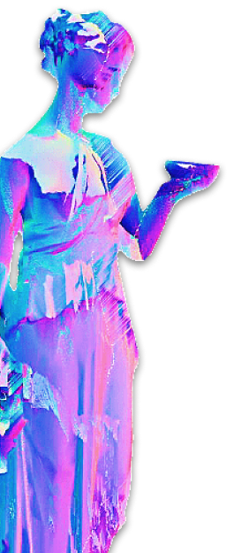

<app-navbar></app-navbar>
<main class="body">
  <div class="desktop_icons">
    <div class="table_line" *ngFor="let icons of desktopIconHandler;index as row;">
      <div class="table_cell" *ngFor="let icon of icons; index as col;" id="{{row + ',' + col}}"
        (dragover)="allowDrop($event)" (drop)="drop($event)" [draggable]="icon.src !=''" (drag)="drag($event)">
        <app-icon *ngIf="icon.src !=''" [windowName]="icon.windowName" [src]="icon.src" [text]="icon.text">
        </app-icon>
      </div>
    </div>
  </div>
  
  
  <ngx-particles id="tsparticles" [options]="(colors$|async)?.particlesSettings"></ngx-particles>
  <window-colors [style.zIndex]="(windows$|async)?.colors?.zIndex"></window-colors>
  <window-call-me-baby [style.zIndex]="(windows$|async)?.callMeBaby?.zIndex"></window-call-me-baby>
  <window-home-page [style.zIndex]="(windows$|async)?.homePage?.zIndex"></window-home-page>
  <window-ltr-music-player [style.zIndex]="(windows$|async)?.ltrMusicPlayer?.zIndex"></window-ltr-music-player>
  <window-projectron [style.zIndex]="(windows$|async)?.projectron?.zIndex"></window-projectron>
  <!-- <window-biograph-bot [isWindowClosed]="isWindowClosed" [(isClosed)]="isWindowClosed.biographBot"
    [windowText]="languages[languageName].biographBotWindow">
  </window-biograph-bot> -->
</main>
